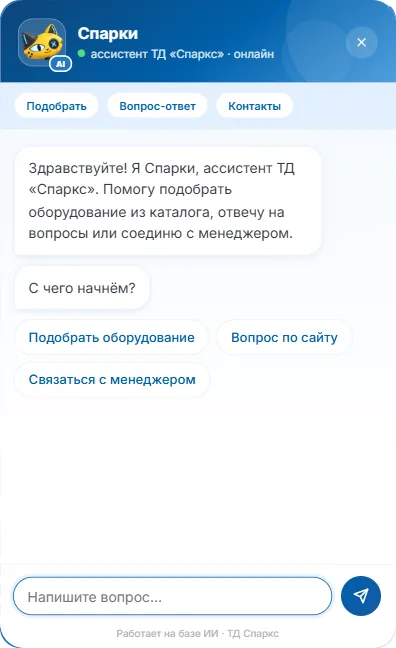

02sparks.su · AI-ассистент
ТД «Спаркс» — ассистент Спарки подбирает оборудование
У производителя мотор-редукторов, редукторов и электродвигателей в каталоге больше 228 000 позиций, и покупатель не может найти нужное сам — пишет менеджеру даже по типовым запросам. Ассистент Спарки ведёт по параметрам подбора, отвечает на вопросы и передаёт менеджеру уже готовый запрос.

Задача
Покупатель приводной техники ищет не по названию, а по параметрам: тип оборудования, мощность, диаметр вала и фланца. Поиск по сайту такого не умеет, поэтому даже простые запросы уходили менеджеру в виде «здравствуйте, подскажите».
Нужен был помощник, который проведёт по подбору сам, ответит на частые вопросы, не выдумает того, чего нет в каталоге, и передаст менеджеру заявку со всем, что уже выбрано.
Как выглядит для покупателя

- Три понятных входа: подобрать оборудование, вопрос по сайту, связаться с менеджером
- Подбор по шагам из параметров каталога — без ввода технических терминов вручную
- Свободные вопросы понимает нейросеть, ответы по сайту и доставке — из проверенных текстов
- Свой маскот и тон бренда; приветствие ждёт, пока посетитель разберётся с cookie-баннером
Цифры
- 228 592
- позиции в каталоге подбора
- 600+
- автотестов прогоняются при каждой правке
- 23
- ответа на частые вопросы, согласованных с заказчиком
Как устроено
- 01
Виджет живёт в Shadow DOM: стили сайта и ассистента не смешиваются, а сам скрипт подгружается только по клику.
- 02
Каталог лежит в своей базе на сервере, и подбор идёт по ней, а не по фантазии нейросети.
- 03
Нейросеть YandexGPT подключена слоем поверх сценариев: понимает свободный вопрос, но отвечает фактами из каталога и согласованных текстов.
- 04
Заявка уходит в AmoCRM с контекстом диалога — менеджер видит, что покупатель уже выбрал.
- 05
Ограничение частоты запросов считается по сессии, а не по IP: покупатели за общим офисным адресом не мешают друг другу.